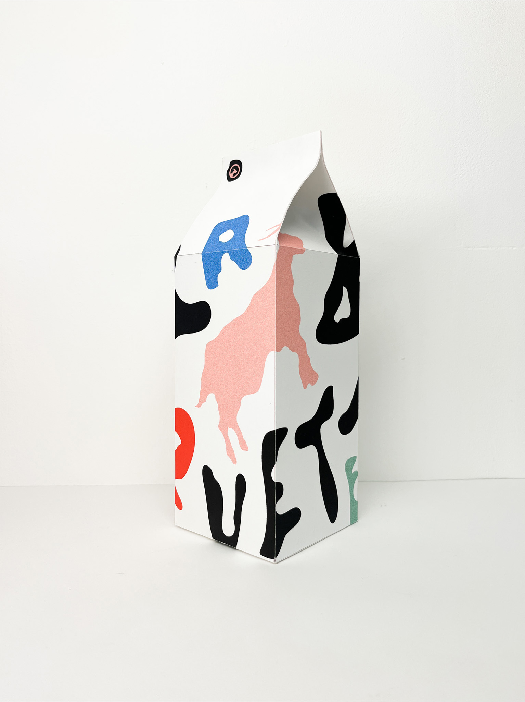
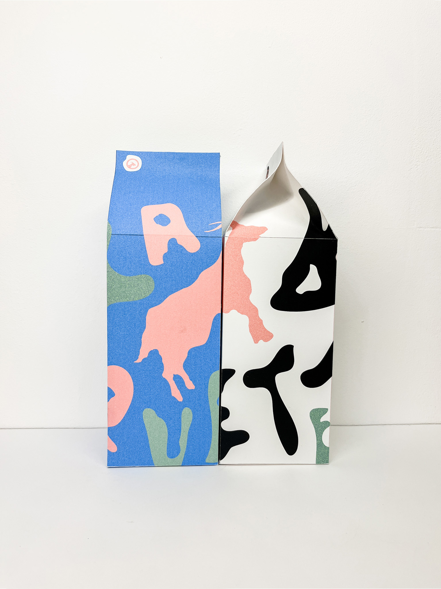
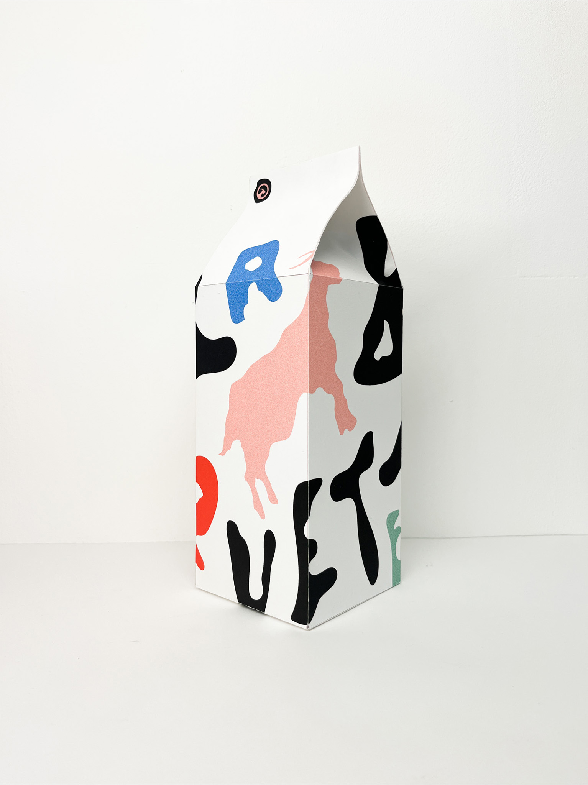
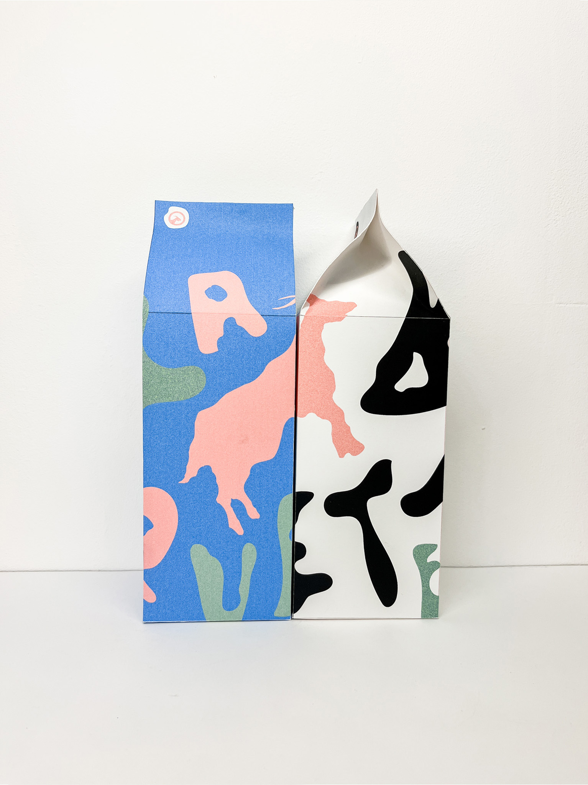

LA BRIQUETERIE
Sujet : Création d’un logo de marque
2023
« La Briqueterie », marque de lait, vend du lait de chèvre en brique. Dans son nom, se cache un jeu de mot : Briqueterie et BIQUETErie, en référence à la chèvre. Dans ce visuel, un travail est créé autour de la typographie. La typographie paysage devient identité de la marque par ses formes et ses lettres de tailles différentes (ici le R). Elle permet de mélanger les syllabes BI et BRI, ce qui peut porter à confusion pour les lecteurs et leur rappelle « la Biquette ». Sa Baseline est « la douceur dans une brique ».Ainsi, le logo et le packaging de la brique, dans leur esthétisme, permettent de donner une image de marque respectueuse de l’environnement et de l’humain.

 


